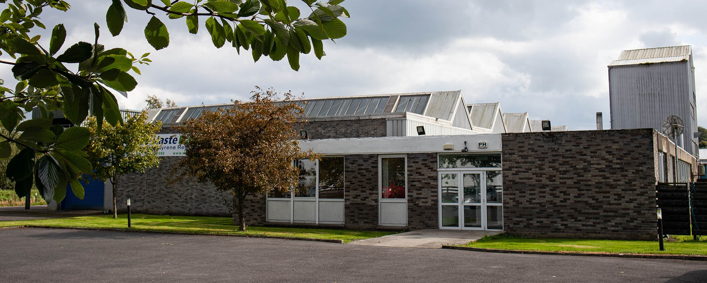
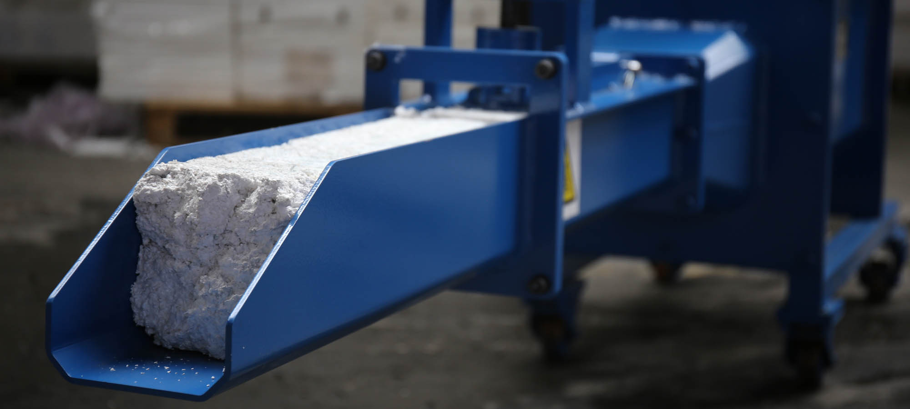

Waste Matters Ltd.
Waste Matters (Ireland) Ltd is based in Clara, Co.Offaly and are the leading polystyrene recycling solution provider in Ireland providing full service waste and recycling solutions for expanded polystyrene (EPS / Styrofoam).
There is no recycling facility for the processing of Expanded polystyrene (EPS) other than to dump it in the landfill where it takes up valuable space and works its way to the surface causing other environmental concerns.
Polystyrene is made up of 98 per cent air and 2 per cent plastic and thus has a high volume/low weight ratio, so even a small quantity of polystyrene can rapidly fill a bin or container. Waste Matters Ltd. manufactures polystyrene compaction equipment which can process large, medium and small volumes of Polystyrene efficiently.
Benefits of compation
- Save space
- Improve green recycling targets
- Reduce landfill
- Reduce carbon footprint
- Reduce costs
After shredding, the polystyrene material is transferred to an extractor which melts and compresses the Polystyrene, generating a solid mass, compressed down to 1/90th of its’ original size.